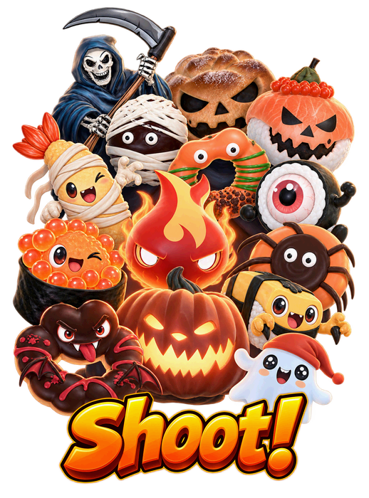
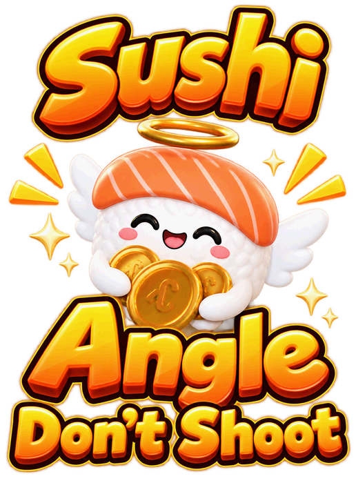
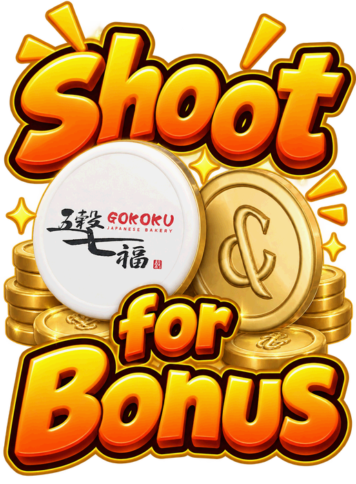

This game needs you to turn around and move your phone to find targets, so you
will not always be looking where you are going.
Stay aware of your surroundings and keep a clear space around you.
Do not play near roads, stairs, escalators, traffic or other hazards, or while
walking, driving or cycling.
You are responsible for playing in a safe environment.
Disclaimer:To the fullest extent permitted by law, RE&S Enterprises
Pte Ltd will not be responsible for any accident, injury, loss or damage arising from or
related to participation in this game.
How To Play



TURN YOUR PHONE to look around — or use the
JOYSTICK at the bottom left. Either works, or both.
TAP THE CANNON to shoot ikura.
CLEAR ONE LEVEL TO REACH THE NEXT
LOOK AROUND. STAY SAFE.Keep a clear space around you while playing.Turn your phone or use the joystick · tap the cannon to shoot
PUT YOUR SCORE ON THE BOARD
0
Your name goes on the leaderboard.
Only used to contact you if you win the
&REWARDS weekly top prize. Leave blank to skip.
TOP RUNS
Total points across a full playthrough
YOUR BEST 5
ALL PLAYERS
Restart Level?
Try this level again.
TIME UP
0
NEW BEST
0 defeated · 0/10 coins · 0% accuracy
Loading model…
Please wait
Look around — the enemies drop in.
1:000
LEVEL 1
ENEMY 1
Finding play area…
100%
KILLS0
COINS0
HIT—
SPARED0
—HIT RATE
➤
STEP 1 OF 3
MOVE YOUR PHONE
Turn LEFT, then RIGHT — the arena moves with you.
◀ LEFTRIGHT ▶
Nice — that’s it.
TAP THE CANNON TO SHOOT IKURA
GAME PAUSED
OPTIONS
Sound
Tutorial
Turn off and it will not be offered again.
CURSOR
Are you sure?
You will lose your current game progress.
PAUSED
📱
ROTATE YOUR PHONE
Halloween Ikura Blast is played upright. Turn your phone back to
portrait to carry on — your round is paused, nothing is lost.
SHOOT
Front-end Test SettingsApply restarts round
Sushi Angel — never shoot it. It flies past behind the enemy; direct hits only, no aim assist ever pulls a shot onto it.
Mystery box — Level 2 and Level 3 only. Shoot it for one random effect; direct hits only, like the angel, since two of the three outcomes are handicaps.
Spawn any enemy now — no need to clear the earlier rounds